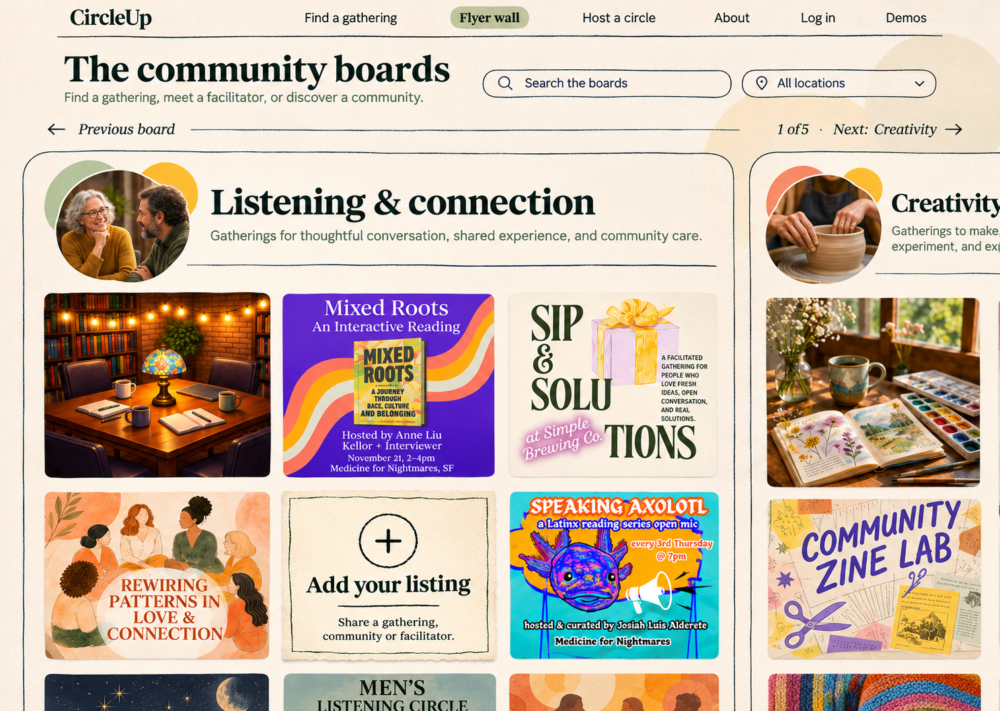
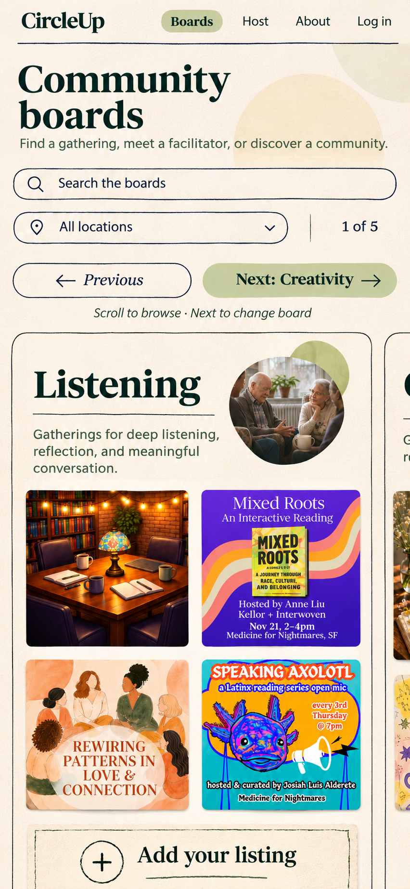
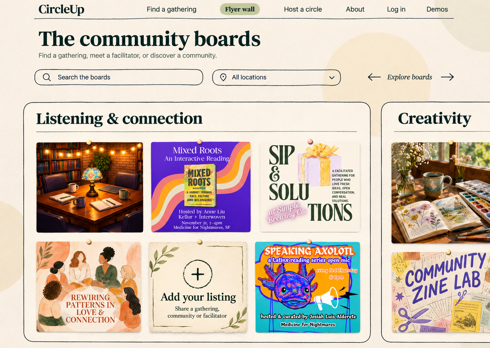
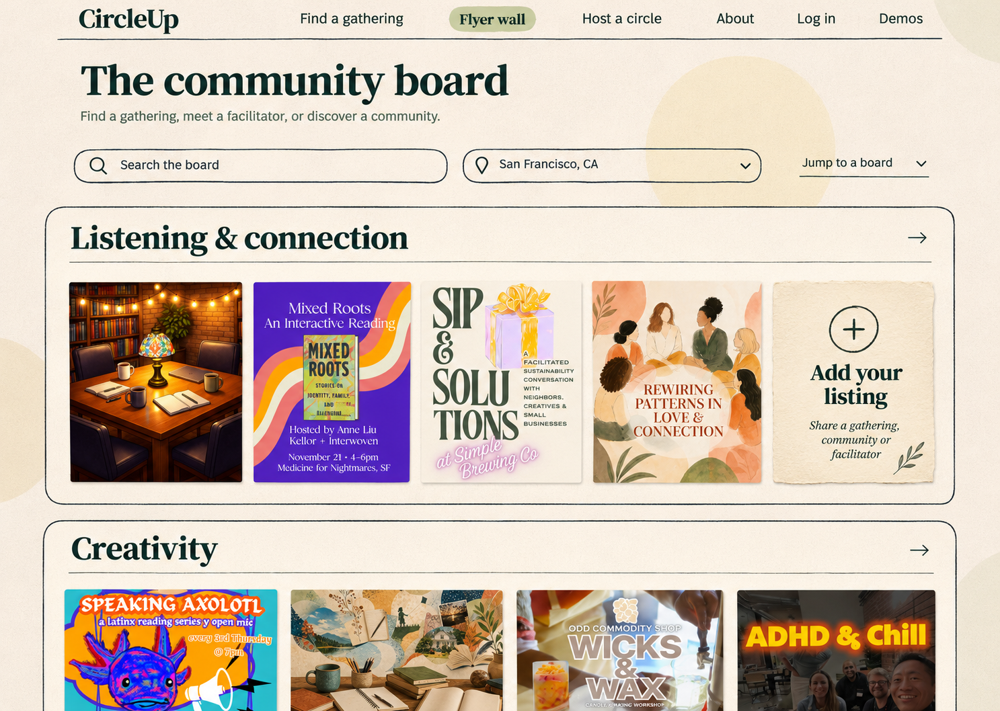
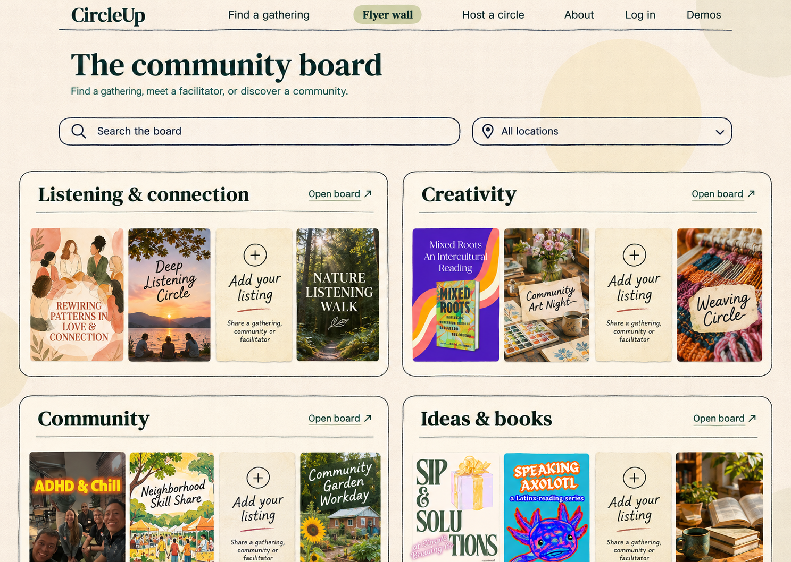
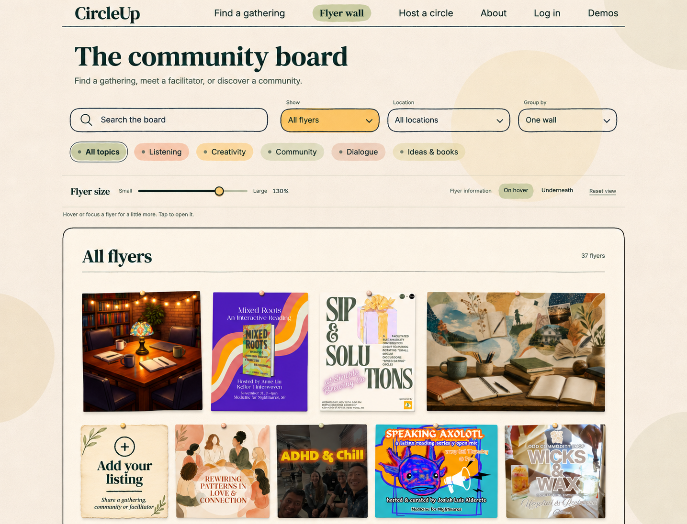
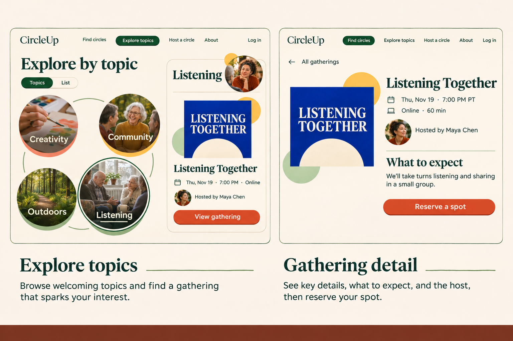
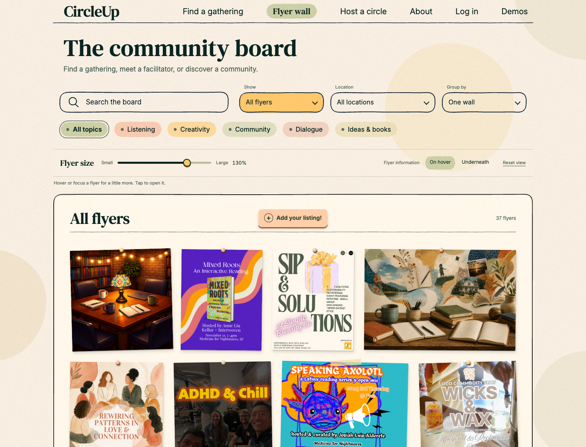

What if the categories were boards?
Side by side is the preferred direction. E and F refine it with photo markers and clearer navigation. The other arrangements remain here for comparison. Search and location stay close by. The invitation to add a listing becomes a flyer among the artwork.
These are imagined layout studies based on the current page. Example artwork, category assignments and text are illustrative; the live wall remains the working reference.
E · Side by side, with a photo for each board
The preferred direction, refined with irregular photo medallions and offset colored paper. Scroll down for flyers; clear Previous and Next controls change boards.

F · A clearer phone invitation
A neighboring board peeks into view, while labeled controls make category switching explicit. The board continues vertically.

A · Boards side by side · First study
One board in view, the next peeking in. Flip or swipe through categories while keeping search and location together.


B · Boards as you scroll
Each category has a full-width board. The next category appears naturally below, with a small jump-to-board control.


C · All the boards at a glance
Several category boards share one overview. Open a board to spend more time with its flyers.


D · Keep the wall, fix the invitation
The current layout with Add your listing as a pinned paper flyer, rather than a button in the board heading.


The earlier photo treatment
Irregular round crops with a colored paper circle offset behind them—the reference for the board markers above.

The starting point
The live page captured at 130% flyer size, with the old listing button in its heading.
